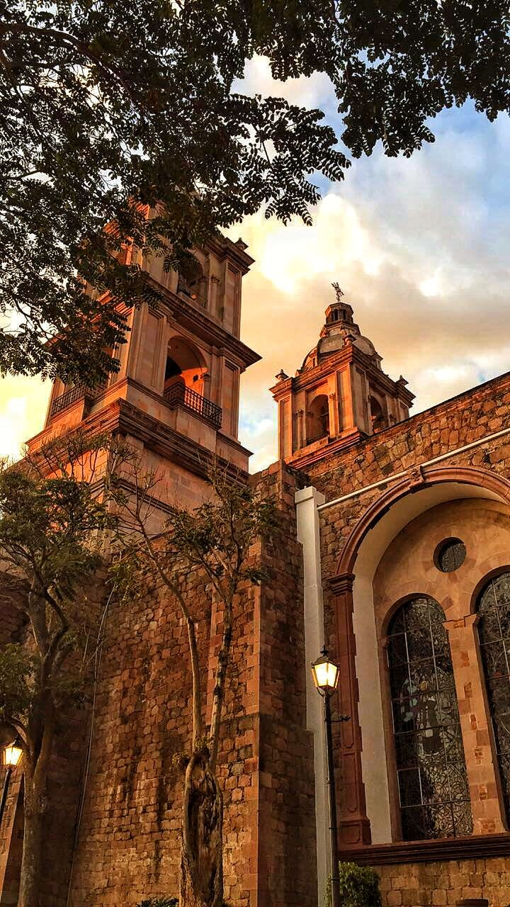
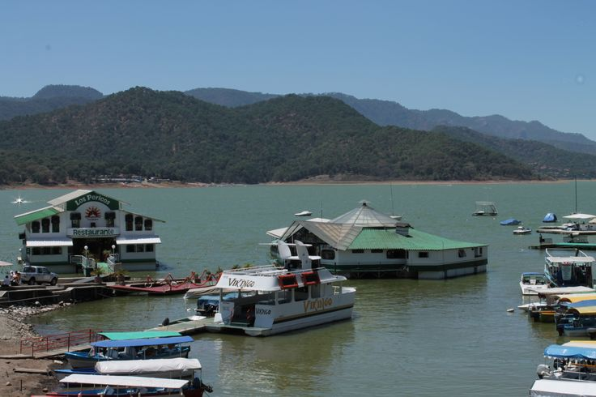
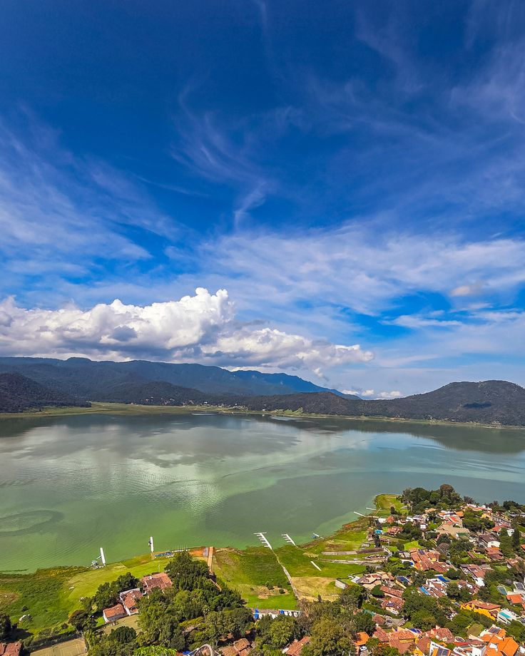

" La belleza de un lugar tambien vive lo que nos hace sentir. "

"La Parroquia de San Francisco de Asís es uno de los lugares más representativos y hermosos de Valle de Bravo. Su arquitectura, sus torres y su fachada hacen que destaque en el centro del pueblo, convirtiéndola en un sitio lleno de historia y belleza. Al observarla, podemos apreciar cómo el paso del tiempo ha dejado huella en sus muros y en la identidad de la comunidad.
Su belleza no se encuentra solamente en su estructura, sino también en lo que representa para las personas. Es un espacio que reúne tradiciones, celebraciones y recuerdos que han pasado de generación en generación. Su presencia en el centro histórico le da un significado especial, pues forma parte de la vida cotidiana y de las costumbres que distinguen a Valle de Bravo.
Visitar esta parroquia nos invita a detenernos y apreciar el valor de los lugares que conservan nuestra historia. Nos recuerda que la belleza no siempre está en lo nuevo, sino también en aquello que ha permanecido a través de los años y sigue teniendo un significado para las personas. Por eso, la Parroquia de San Francisco de Asís es mucho más que un edificio: es parte del patrimonio cultural y de la esencia de Valle de Bravo."
" El Embarcadero Municipal es uno de los lugares más atractivos de Valle de Bravo, ya que permite apreciar la belleza de su lago y las montañas que lo rodean. Las lanchas y los yates que recorren el agua le dan vida al paisaje, creando una vista especial que combina la naturaleza con la actividad turística del pueblo.
Este lugar es hermoso porque transmite una sensación de tranquilidad y libertad. El movimiento del agua, el sonido de las embarcaciones y la vista del horizonte hacen que cada visita sea diferente. Además, es un espacio donde las personas pueden convivir, disfrutar del paisaje y conocer Valle de Bravo desde otra perspectiva.
Más allá de su belleza, el embarcadero nos recuerda la importancia de cuidar nuestros espacios naturales. El lago es parte de la identidad de Valle de Bravo y representa una riqueza que debemos valorar y proteger. Contemplar este paisaje nos enseña que, en ocasiones, los momentos más especiales se encuentran simplemente al detenernos a observar lo que nos rodea. "

" La cima de La Peña es uno de los lugares más impresionantes de Valle de Bravo, ya que desde lo alto se puede contemplar el lago, las montañas y gran parte del pueblo. Su belleza natural convierte este sitio en un mirador especial, donde el paisaje parece extenderse hasta el horizonte y cada detalle invita a detenerse y admirar el entorno.

Además de su belleza, La Peña posee un gran valor histórico, pues se relaciona con los antiguos habitantes matlatzincas de la región. Sus enormes formaciones rocosas, la vegetación y la tranquilidad que transmite hacen de este lugar un espacio donde la naturaleza y la historia se unen, recordándonos la importancia de conservar nuestro patrimonio.
Llegar a la cima y observar todo desde las alturas nos permite reflexionar sobre lo maravilloso que es nuestro entorno. A veces, necesitamos alejarnos un momento de la rutina para apreciar las cosas que normalmente pasan desapercibidas. La Peña nos enseña que la verdadera belleza no solo está en lo que vemos, sino también en la paz, la admiración y las emociones que un lugar puede despertar en nosotros. "